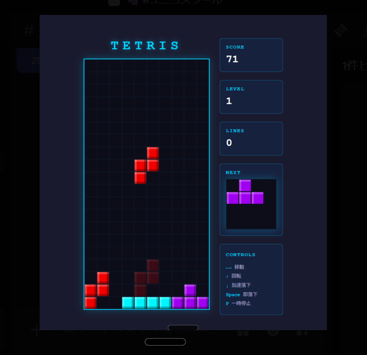
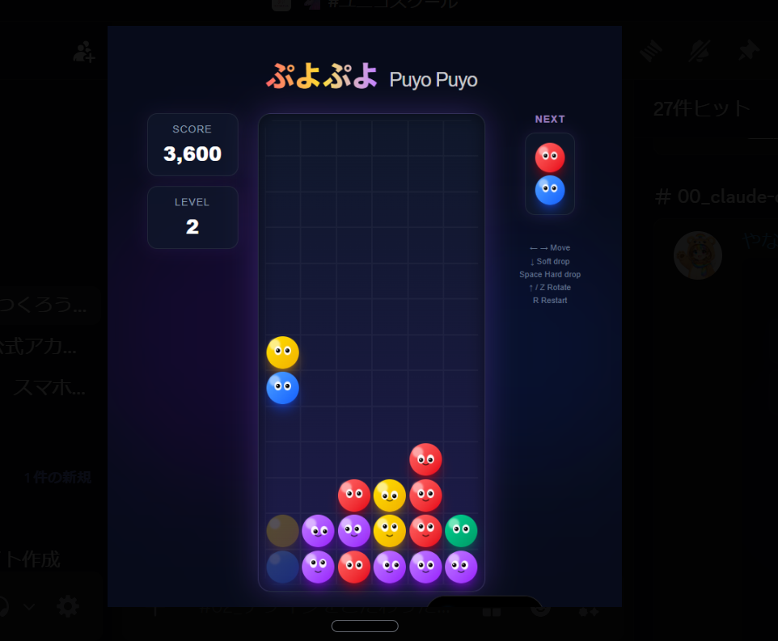
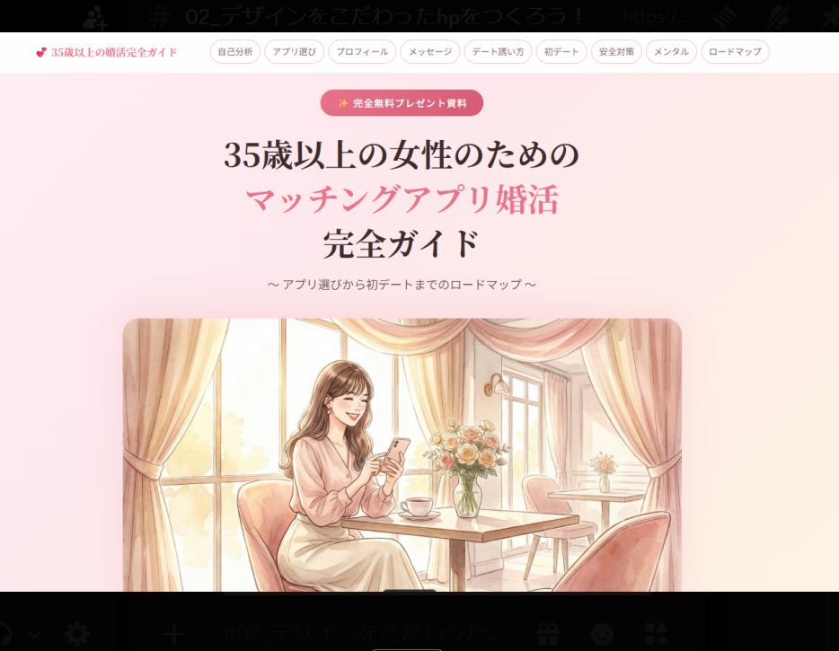
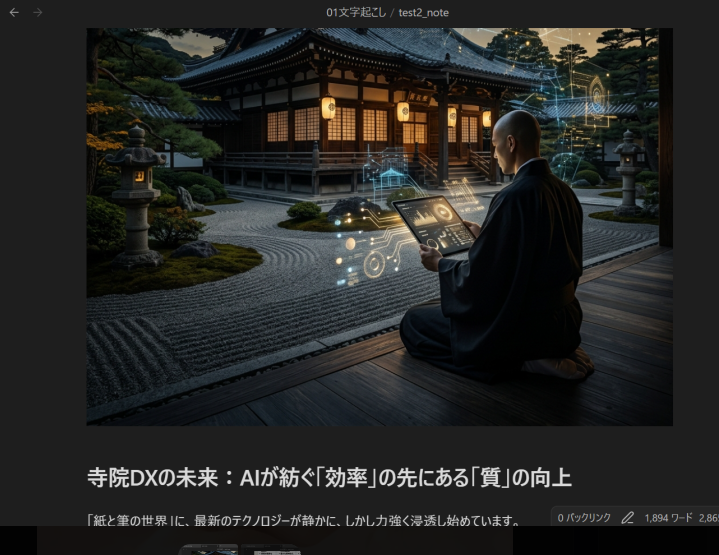
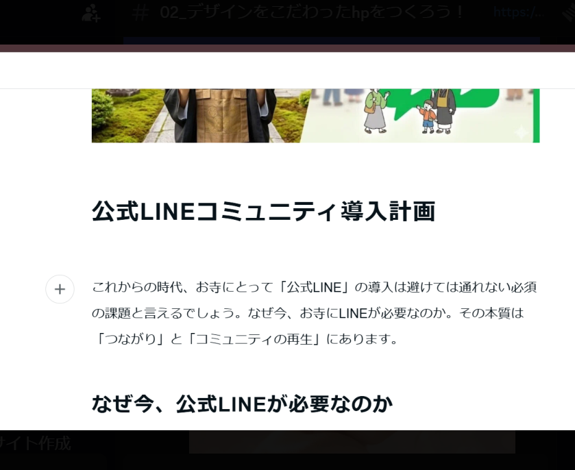
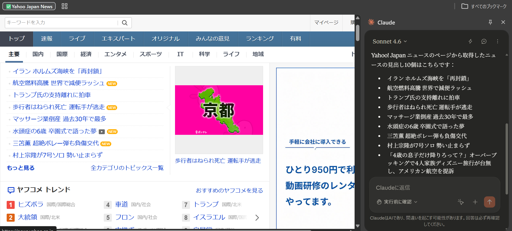
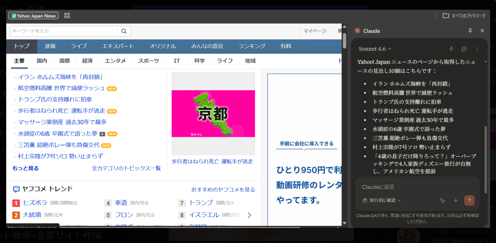

ゲーム開発
テトリス
Claude AIにプロンプトのみで指示し、ブラウザで動くテトリスを開発。スコア・レベル・NEXTブロック表示まで完全実装。
Claude AI × 実績集
Claude AIを活用してゲーム・LP・コンテンツ・自動化ツールを開発。
プロンプトエンジニアリングの実践ポートフォリオです。
About
Claude AIを中心に、様々なドメインで成果物を制作しています。プロンプトエンジニアリングの技術を活かし、ゲーム開発からコンテンツ制作、業務自動化まで幅広く対応します。
アイデアを素早く形にし、実用的な成果物として届けることを大切にしています。Claude AIの特性を深く理解し、複雑なロジックも自然言語で実装へ落とし込みます。
ゲームエンジン・スクレイピング・LP制作・コンテンツ執筆など、ジャンルを問わず対応可能です。
Works
Claude AIを使って制作したプロジェクト一覧。カテゴリで絞り込めます。

ゲーム開発
Claude AIにプロンプトのみで指示し、ブラウザで動くテトリスを開発。スコア・レベル・NEXTブロック表示まで完全実装。

ゲーム開発
連鎖・スコア・レベルアップロジックを含むぷよぷよをAIで実装。キャラクター表情アニメーションも再現。

Web制作 / LP
35歳以上の女性向けマッチングアプリ完全ガイドのLPをAIで制作。ナビゲーション・イラスト・構成を含む。

コンテンツ制作
「AIが紡ぐ効率の先にある質の向上」をテーマに、お寺のデジタル化をテーマにしたnote記事をAIで執筆。

コンテンツ / 企画
お寺向けの公式LINEコミュニティ導入提案書をAIで作成。背景・必要性・ロードマップまで体系的に構成。

自動化 / スクレイピング
Yahoo! Japanニュースの見出しをClaude AIが自動取得・整形・一覧表示。ブラウザ拡張との連携デモ。

自動化 / データ加工
取得したWebデータをClaude AIで自動整形・カテゴリ分類・CSV出力まで一貫処理。業務効率化ワークフローのデモ。
Process
作りたいものの目的・対象ユーザー・機能要件を言語化し、Claude AIへの最適な指示文を設計します。
AIが生成したコードや文章をブラウザ・実環境で即検証。フィードバックをプロンプトに反映しながら高速に改善します。
完成した成果物を本番環境へデプロイ。GitHub Pages・Vercel・Notionなど用途に応じた手段で公開します。